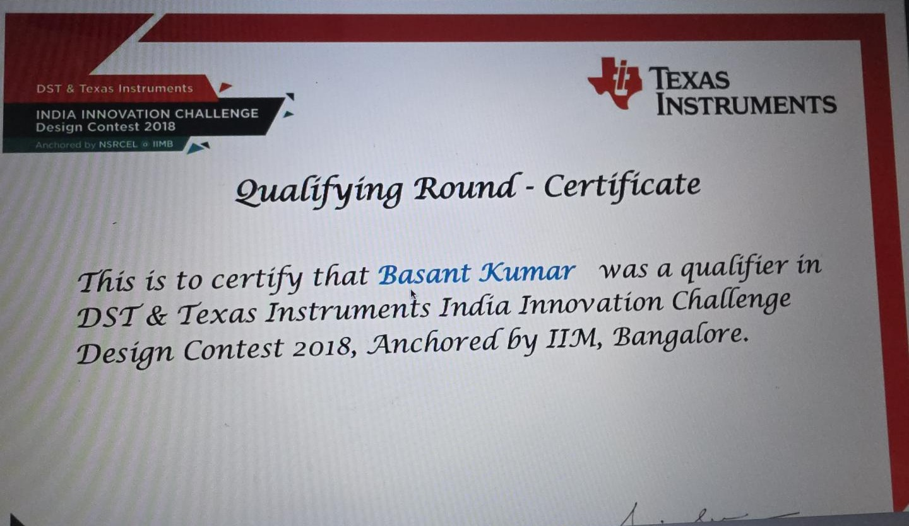

BEng Bachelor's engineering project
Swarm drone coordination
Multi-drone system for disaster response
A Bachelor's engineering project exploring how multiple drones could be coordinated through a single remote-control system to support disaster-response operations.
DST & Texas InstrumentsIndia Innovation Challenge 2018Qualifying round · Design Contest anchored by IIM Bangalore- BEng Electronics & Telecommunication
- Wooden-frame prototype

01. Overview
Engineering a coordinated response
Disaster-response operations can be complicated by difficult terrain, inaccessible locations and the challenge of getting essential supplies where they are needed quickly.
This Bachelor's engineering project explored a multi-drone coordination concept for those situations, built around a centralised remote-control approach. It brought together drone hardware, navigation-related sensing, battery monitoring and operational safety considerations to investigate how coordinated unmanned systems could assist emergency-response work, such as delivering supplies and supporting search and rescue.
This was a student prototype for investigation and competition. It was not deployed in a real disaster.
02. The engineering challenge
Four problems to solve together
- 01
Coordinating multiple drones
Operating several aircraft through one control approach instead of one pilot per drone.
- 02
Navigation and orientation
Knowing where each drone is, and keeping it stable and correctly oriented in flight.
- 03
Battery and operating conditions
Watching battery state so a drone is not lost mid-task.
- 04
Safety on failure
Deciding what a drone should do when communication drops or the battery runs low.
03. System design
How the system was designed
- Centralised control
- A single remote-control approach intended to manage multiple drones through a common control interface.
- GPS integration
- Location information intended to support navigation and location-aware operation.
- Gyroscope integration
- Orientation sensing intended to support stable movement and control.
- Battery monitoring
- Monitoring battery condition as part of the project's operational safety considerations.
- Fail-safe behaviour Design objective
- A return-to-origin behaviour proposed for communication loss or low battery. Treated here as a design objective: its implementation and testing are not documented.
04. Engineering workflow
From problem to recognition
- 01
Problem identification
The potential role of coordinated drones in disaster response and essential-supply delivery.
- 02
System concept
A centralised coordination approach and the components needed for navigation and monitoring.
- 03
Prototype engineering
A wooden-frame drone integrating motors, propellers, a battery pack, GPS and gyroscope sensing.
- 04
Operational safety
Battery monitoring, with return-to-origin on signal loss or low battery as a safety objective.
- 05
Innovation recognition
Qualifier, DST & Texas Instruments India Innovation Challenge Design Contest 2018.
05. Recognition
Recognised at the India Innovation Challenge
The project received qualifying-round recognition in the DST & Texas Instruments India Innovation Challenge Design Contest 2018, anchored by IIM Bangalore.
It was an important milestone in my undergraduate engineering journey, and in my interest in technology-driven solutions to practical problems.
- Organisers
- Department of Science & Technology (DST) and Texas Instruments
- Contest
- India Innovation Challenge Design Contest 2018
- Level
- Qualifying round
- Anchored by
- NSRCEL, IIM Bangalore

Engineering skills
- Electronics & telecommunication engineering
- Hardware integration
- GPS integration
- Gyroscope integration
- Battery monitoring
- Remote-control systems
- System design
- Engineering problem-solving
06. Reflection
Where engineering meets real-world problems
This project was an important part of my undergraduate engineering journey. It challenged me to think about how hardware, navigation, monitoring and control could work together to address a practical problem.
It strengthened my interest in engineering systems and technology-driven problem-solving, interests that still shape how I approach analytics and product work.